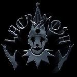
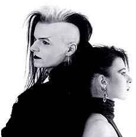
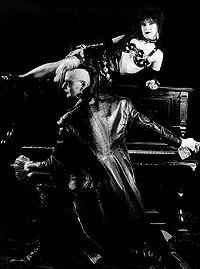

Para falarmos da banda Lacrimosa, temos antes
que conhecer Tilo Wolf. Alemão de Frankfurt, Tilo nasceu
em 10 de julho de 1972, e desde a infância deixava nítida
sua imensa capacidade artística. Aos 12 anos, Tilo teve
sua poesia publicada em diversas revistas de literatura. Estudou
piano e trompete, chegando a se apresentar em concertos na Alemanha.
Em 1989, editou uma revista musical e em 1990, aos 18 anos, lançou
seu primeiro single com duas faixas intitulado Clamor,
que se esgotou em pouco tempo.
Lacrimosa
foi nome adotado inspirado em Réquiem, de Mozart;
nome de base latina que significa Banhado em Lágrimas
ou Aflito. A figura do Pierrô se tornou
a marca e o estilo da banda sintetizado. Segundo Tilo Wolf: "É
um símbolo. Uma apresentação cômica
da música. Está presente em todos os sentimentos
das nossas canções". Assim, a atmosfera
sombria e os arranjos clássicos das músicas, fundiam-se
com a proposta gótica da expressão de Tilo Wolf.
No ano de 1990, o desprezo das gravadoras pelas
músicas alternativas levou Tilo a criar o próprio
selo, Hall of Sermon, que viria a abrigar artistas como
Dreams of Santy e Artrosis.
Angst (Medo) foi o primeiro álbum
oficial lançado, concretizando os ideais primitivos iniciados
com o single Clamor. O disco chegava com letras repletas
de drama e o lirismo dos arranjos fortemente influenciados pela
música clássica. Este álbum foi muito bem
aceito no cenário gótico alemão e posteriormente
por toda a Europa.
Einsamkeit, que significa Solidão,
foi o segundo álbum lançado em 1992, completando
o trabalho anterior. No ano seguinte, Ales Lüge (Tudo
Mentira) é lançado como single trazendo quatro
faixas que eram o prenúncio do próximo e excelente
álbum Satura, que chegaria ao público no
mesmo ano com a melancolia e o lirismo característicos.
Em 1994 é lançado o single Schacal.
Na
turnê de Satura, Tilo convida a finlandesa Anne
Nurmi (ex integrante do Two Witches) para que participe das apresentações
ao vivo. O resultado foi tão bom que Anne passou a integrar
definitivamente o Lacrimosa.
O álbum Inferno de 1995, já
contava com a voz suave de Anne, e foram acrescentados instrumentos
sinfônicos. Este trabalho foi considerado o mais agressivo
até aquele momen-to. Porém, muito bem aceito. O
primeiro grande sucesso, Copycat, foi gravado neste álbum.
Inferno repercutiu fortemente no cenário
musical alemão. Não ficou restrito apenas aos circuitos
alternativos. A partir daí, o Lacrimosa alcançou
um público maior e passou a influenciar outros artistas.
The Clips 1993-1995 foi a primeira concepção
visual das canções Satura, Schakal e Copycat.
Em 1996, Tilo recebe da revista alemã Zillo,
o prêmio Alternative Rock Music Award. No mesmo
ano, o single Stolzes Herz (Coração Orgulhoso)
é lançado com duas versões da faixa título.
Em 1997 foi lançado o álbum Stille (Silêncio),
com uma sonoridade mais pesada aliada a orquestração
clássica. O vídeo Silent Clips trazia os
clipes de Stolzes Herz, Not Every Paint Hurts,
Siesh du Mich im Licht?, e seus Making Off’s. Um
ano após, a banda dá um presente aos fãs
com o CD ao vivo Live. Em 1999 chega ao público
mais um single: Alleine Zu Zweit (Juntos e Sozinhos),
que conta com a participação da orquestra sinfônica
de Londres.
O CD Elodia é uma Ópera
Rock que traz na terceira faixa a belíssima Halt Mich.
O álbum é dividido em três atos, e narra a
história de um relacionamento que chega ao fim. Portanto,
é uma alusão à semideusa do amor Elodia,
que é fadada ao fracasso.
Para comemorar o décimo aniversário
foi lançado o vídeo The Live History 2000.
Com várias apresentações ao vivo de toda
a carreira da banda. Este vídeo tem em sua maioria exibições
gravadas no Wave Gothic Festival, realizado na Alemanha.
Em
Agosto de 2001, o Lacrimosa lança o single Der Morgen
Danach (A Manhã Seguinte), que corresponde diretamente
ao trabalho anterior, Elodia. Ainda no mesmo ano, Fassade
(Fachada) é lançado trazendo a faixa Liebspiel
(Jogos de Amor) para atingir em cheio os seguidores do
Heavy Metal.
O single Durch Nacht und Flut foi lançado
em 2002 com apenas quatro faixas, mas obteve uma ótima
repercussão. Este single preparava os fãs para o
grande lançamento do ano seguinte. Finalmente, em janeiro
de 2003 foi lançado o álbum Echos, com
a faixa que dava nome ao single anterior. Echos é
considerado um dos melhores trabalhos do Lacrimosa, onde todas
as influências Heavy e clássicas de Tilo, foram condensadas
numa mesma obra.
No ano seguinte, Tilo dá início
a um projeto solo no qual combina elementos do clássico,
do gótico e industrial, denominado SnakeSkin.
Music For the Lost é o trabalho que marca este
novo caminho musical de Tilo.
Em 2005, os fãs tiveram o prazer de conhecer
o 11º álbum da banda. Lichtgestalt (Criatura
de Luz) foi lançado em maio e traz oito faixas escritas
e orquestradas por Tilo Wolf, com exceção da última,
Hohelied der Liebe, da qual a letra é um trecho
da Bíblia. No mesmo ano, foi lançado DVD Musikkurzfilme
com 10 videoclipes da carreira e um bônus com making
of de clássicos como Schakal e Copycat.
Ainda é lançado o EP Lichtgestalten que
contém versões deLichgestalt e mais quatro
faixas. Em seguida, Anne Nurmi divulga que está grávida
de 4 meses. A notícia repercute positivamente entre os
fãs mas coloca em risco as turnês programadas.
Em 2006, a banda participa de festivais como Summer
Breeze Festival e Wave Gotik Treffen. Em outubro
é lançado o álbum Canta'Tronic do
projeto Snakeskin de Tilo Wolf. Em junho de 2007 é anunciado
Lichtjahre, CD (duplo) e DVD que trazem velhos sucessos
como The Turning Point, Malina e músicas
mais recentes como The Party is Over e Lichtgestalt.
Em outubro, ao lado da banda sueca Hammerfall, o Lacrimosa
realiza uma pequena turnê sulamericana passando por São
Paulo, Buenos Aires e Santiago; e segue para apresentações
no México e até mesmo na China.
Em 2008 a banda se apresentou em festivais e turnês
na Alemanha, Ucrânia, Russia e Romênia. No final deste
ano e início de 2009 já iniciam as gravações
do próximo trabalho de estúdio. Em maio é
lançado oficialmente Sehnsucht.
O novo álbum traz dez faixas que soam mais
agressivas com guitarras e vocais mais pesados. Sehnsucht,
apesar de estar musicalmente mais distante de seu antecessor,
é bem recebido pela crítica e pelos ouvintes. Tilo
Wolf declarou "Estamos felizes por lançar nosso
novo álbum de estúdio, cujo conteúdo emocional
e música são centralizados em uma palavra, a qual,
na diversidade da percepção individual, sempre permanecerá
clara em sua base e então representa perfeitamente o título
para este álbum: Sehnsucht (saudade)".
Após tantos anos de carreira, o
Lacrimosa atingiu um nível de maturidade poucas vezes encontrado
em uma banda. A qualidade e a ousadia são características
marcantes que conseguem agradar góticos e headbangers de
todo o mundo.
Por
Spectrum
Downloads
Disponíveis: